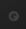

jQuery StefCode With Sweet Alert Demo
@author Stefanus Prasetyo Nugroho
jQuery-StefCode With Sweet Alert adalah sebuah plugin jquery yang sederhana untuk mendeteksi user menekan tombol keyboard sesuai pilihan, dan klik kanan dan menampilkan notifikasi sweet alert cara penggunaan:
- download jquery terlebih dahulu https://cdnjs.cloudflare.com/ajax/libs/jquery/3.2.1/jquery.min.js atau di folder assets/js/jquery-3.2.1.min.js
- download plugin sweetalert.js https://unpkg.com/sweetalert2@7.4.1/dist/sweetalert2.all.js atau di folder dist/sweetalert.min.js
- download sweetalert.css https://unpkg.com/sweetalert2@7.4.1/dist/sweetalert2.css atau di folder dist/sweetalert.min.css
- panggil jQueryStefCode dengan cara
$(window).StefCode() Atau
$(window).stefcode({ code:65 , ctrlcode: 85 , alt: 85, title:'hay', description:'hahaa', type:'error' });;
Download
Jquery Stef Redirect Page Plugin
@author Stefanus Prasetyo Nugroho
jQuery Stef Redirect Page adalah sebuah plugin jquery yang sederhana untuk redirect halaman dengan timer sesuai settingan user
- download jquery terlebih dahulu https://cdnjs.cloudflare.com/ajax/libs/jquery/3.2.1/jquery.min.js atau di folder assets/js/jquery-3.2.1.min.js
- panggil Jquery Stef Redirect Page dengan cara
_st(document).stefcountdown({
url: 'https://www.facebook.com/',
count: 60 ,
target:'#pesan',
message:'anda akan redirect ke \n'
});
atau _st(document).stefcountdown();
Example
Download
Jquery stefSlideShow Plugin
@author Stefanus Prasetyo Nugroho
jQuery stefSlideShow adalah sebuah plugin jquery yang sederhana untuk membuat slideshow
- download jquery terlebih dahulu https://cdnjs.cloudflare.com/ajax/libs/jquery/3.2.1/jquery.min.js atau di folder assets/js/jquery-3.2.1.min.js
- panggil Jquery stefSlideShow dengan cara
$.simpleSlideShow('#slideshow');
atau
$.simpleSlideShow('#slideshow', {'delay':5000, 'fadeSpeed': 200});
Download
Example
